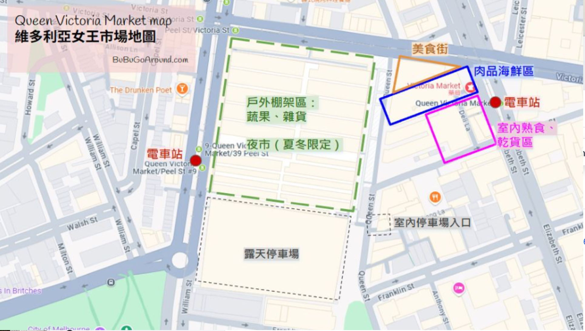
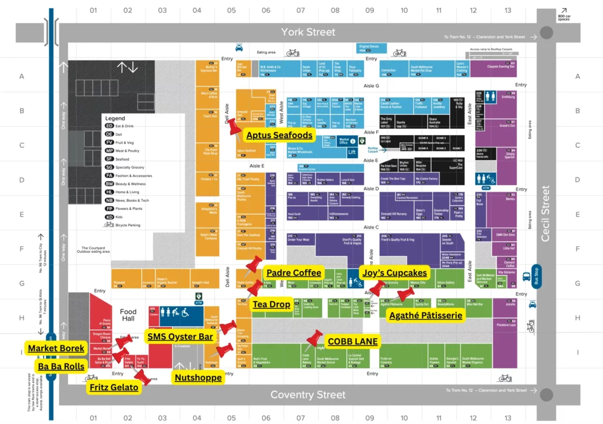

2026 年 7 月 16 日 – 7 月 24 日 · 9 天自駕行程

| 推薦美食 | 推薦理由 |
|---|---|
| American Doughnut Kitchen | 超人氣甜甜圈餐車，必吃之一 |
| Bratwurst Shop & Co | 超人氣德式香腸熱狗堡，必吃之二 |
| Boreks | 當地人愛買的土耳其風味烤餅 |
| Koko Black | 人氣甜點店，精緻巧克力、蛋糕，號稱巧克力天堂 |
| Market Lane Coffee | 知名外帶手沖咖啡店 |
| Limnos Seafood Pty Ltd | 新鮮漁獲，還有生魚片、現開生蠔等即食海鮮 |

| 店家 | 推薦 |
|---|---|
| Agathe Patisserie | 法式糕點，奶黃布丁、香蘭可頌、檸檬塔 |
| Padre Coffee | 手沖咖啡，招牌豆 Lucky Boy、Daddy's Girl |
| Aptus Seafood | 生蠔、刺身、鮑魚卷；熱食有芝士焗龍蝦、魚塔可 |
| Cannoleria | 義大利 Cannoli，可搭開心果醬 |
| Cobb Lane | 創意可頌，黑芝麻、抹茶柚子 |
| Code Black | 2024 澳洲 Brewers Cup 冠軍，椰子冷萃 |
| Market Borek | 土耳其烤餅，招牌辛辣羊肉餡 |
| Nutshoppe | 1983 年起自家烘焙堅果 |
| Fritz Gelato | 得獎義式冰淇淋，肉桂薑、咖啡衝擊 |
| Joy's Cupcakes | 多口味杯子蛋糕（含素食）、焗芝士蛋糕 |
| Ugo Burrata Bar | 現吃義大利布拉塔鮮奶酪 |
| Deli Nuts | 慢烘堅果，招牌焦糖堅果 |
採買地點：Woolworths Metro Southern Cross、維多利亞市場、Outlet（Spencer／DFO South Wharf）。